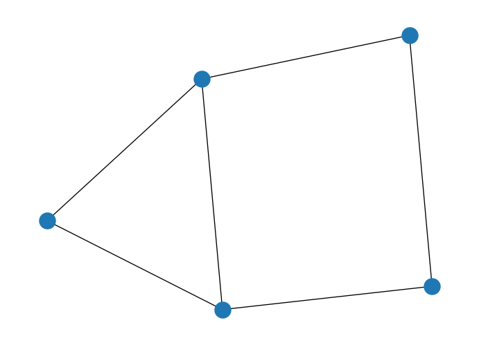
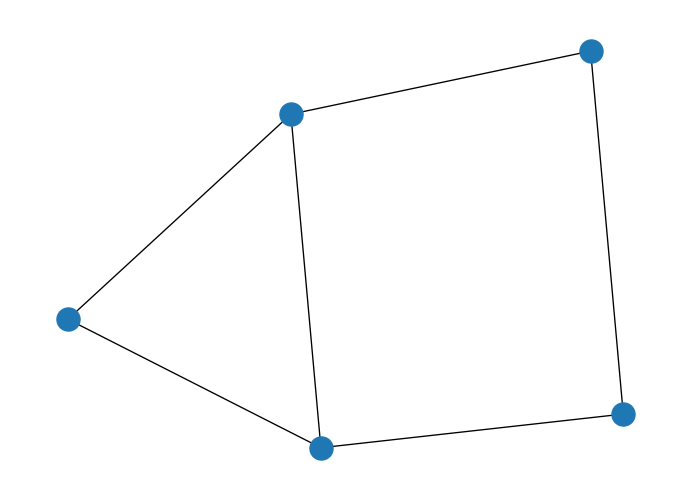
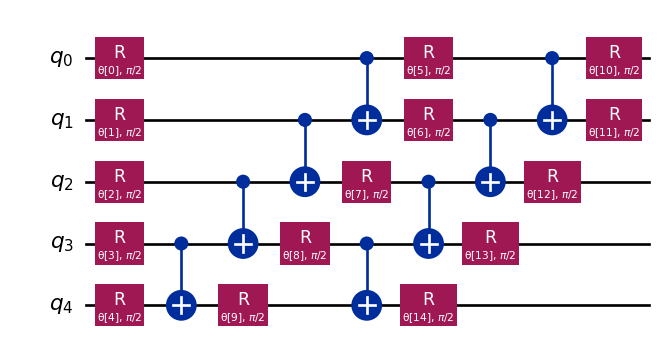
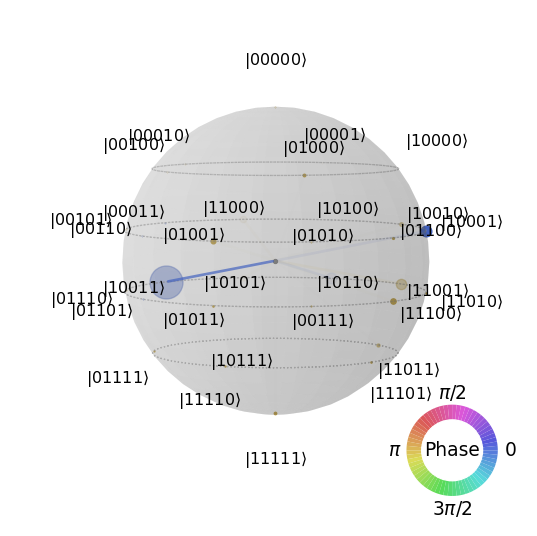
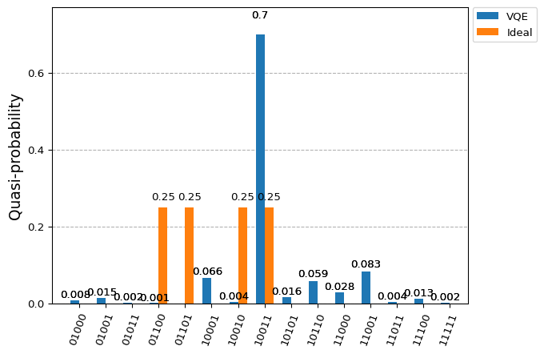

import networkx as nx
import numpy as np
# Create empty graph
G = nx.Graph()
# Add edges to the graph (also adds nodes)
G.add_edges_from([(1,2),(1,3),(2,4),(3,4),(3,5),(4,5)])
nx.draw(G)
We will learn how to set up those parameters by training an ansatz and using classical optimization techniques. And we will continue with our previous example of the MaxCut problem.
import networkx as nx
import numpy as np
# Create empty graph
G = nx.Graph()
# Add edges to the graph (also adds nodes)
G.add_edges_from([(1,2),(1,3),(2,4),(3,4),(3,5),(4,5)])
nx.draw(G)
import dimod
from collections import defaultdict
# Initialize our Q matrix
Q = defaultdict(int)
# Update Q matrix for every edge in the graph
for i, j in G.edges:
Q[(i,i)]+= -1
Q[(j,j)]+= -1
Q[(i,j)]+= 2
h, j, offset = dimod.qubo_to_ising(Q)
j{(1, 2): 0.5, (1, 3): 0.5, (2, 4): 0.5, (3, 4): 0.5, (3, 5): 0.5, (4, 5): 0.5}The Hamiltonian comes in the shape we previously described that can also be represented as:
from qiskit.quantum_info import SparsePauliOp
H_op = SparsePauliOp.from_list(
[
("ZZIII", 0.5),
("ZIZII", 0.5),
("IZIZI", 0.5),
("IIZIZ", 0.5),
("IIIZZ", 0.5),
]
)
print(f"Number of qubits: {H_op.num_qubits}")Number of qubits: 5H_op.to_matrix()array([[2.5+0.j, 0. +0.j, 0. +0.j, ..., 0. +0.j, 0. +0.j, 0. +0.j],
[0. +0.j, 0.5+0.j, 0. +0.j, ..., 0. +0.j, 0. +0.j, 0. +0.j],
[0. +0.j, 0. +0.j, 0.5+0.j, ..., 0. +0.j, 0. +0.j, 0. +0.j],
...,
[0. +0.j, 0. +0.j, 0. +0.j, ..., 0.5+0.j, 0. +0.j, 0. +0.j],
[0. +0.j, 0. +0.j, 0. +0.j, ..., 0. +0.j, 0.5+0.j, 0. +0.j],
[0. +0.j, 0. +0.j, 0. +0.j, ..., 0. +0.j, 0. +0.j, 2.5+0.j]],
shape=(32, 32))from numpy.linalg import eig
eigenvalues, eigenvectors = eig(H_op.to_matrix())
min_idx = np.argmin(eigenvalues)
print(f"Reference value: {eigenvalues[min_idx] + offset:.5f}")Reference value: -4.50000+0.00000jeigenvectors[min_idx]array([0.+0.j, 0.+0.j, 0.+0.j, 0.+0.j, 0.+0.j, 0.+0.j, 1.+0.j, 0.+0.j,
0.+0.j, 0.+0.j, 0.+0.j, 0.+0.j, 0.+0.j, 0.+0.j, 0.+0.j, 0.+0.j,
0.+0.j, 0.+0.j, 0.+0.j, 0.+0.j, 0.+0.j, 0.+0.j, 0.+0.j, 0.+0.j,
0.+0.j, 0.+0.j, 0.+0.j, 0.+0.j, 0.+0.j, 0.+0.j, 0.+0.j, 0.+0.j])So we want the complete solution, the one that captures the degeneracy of our eigenvector, meaning there are several solutions for the original MaxCut problem. We would like to select an expressive enough ansatz and for this, we can rely on the implemented ones within Qiskit’s circuit library.
# Use RealAmplitudes circuit to create all kind of states
from qiskit.circuit.library import real_amplitudes
ansatz = real_amplitudes(num_qubits=H_op.num_qubits, reps=2)
ansatz.decompose().draw('mpl')
Let’s do an initial guess and see what the outcome is.
np.random.seed(6)
# Parameters are rotation angles, remember
initial_point = np.random.uniform(-np.pi, np.pi, ansatz.num_parameters)from qiskit_aer import StatevectorSimulator
qc = ansatz.copy()
for idx, param in enumerate(ansatz.parameters):
qc = qc.assign_parameters({param: initial_point[idx]})
qc = qc.decompose()
backend = StatevectorSimulator()
result = backend.run(qc).result()
psi = result.get_statevector(qc)from qiskit.visualization import plot_state_qsphere
plot_state_qsphere(psi)Cannot see anything there. Let’s check the expectation value we get for that state and our Hamiltonian.
from qiskit_aer.primitives import Estimator
estimator = Estimator()
expectation_value = estimator.run(qc, H_op).result().values
print('Exp. val.:', expectation_value + offset)Exp. val.: [-3.25195312]Well, quite close. Probably we could do some smart guesses so that we can minimize this expectation value and therefore find a close enough state.
def compute_expectation(params):
"""
Computes expectation value based on measurement results
Args:
params: Parameters to be used
Returns:
float: Expectation value
"""
qc = ansatz.copy()
for idx, param in enumerate(ansatz.parameters):
qc = qc.assign_parameters({param: params[idx]})
qc = qc.decompose()
return estimator.run(qc, H_op).result().values + offsetcompute_expectation(initial_point)array([-3.24414062])Considering it the initial point, we could use our function to iterate over it and select gradient-free optimizer to try to find a better parameterization.
from scipy.optimize import minimize
# Minimize using COBYLA optimizer
res = minimize(compute_expectation, initial_point, method='COBYLA')
res message: Return from COBYLA because the trust region radius reaches its lower bound.
success: True
status: 0
fun: -4.41015625
x: [ 2.607e+00 -1.031e+00 ... 1.422e+00 1.844e+00]
nfev: 126
maxcv: 0.0compute_expectation(res.x)array([-4.36914062])Cool, so we could get some better parameters based on the minimization of the expectation value. Let’s check the actual final state.
qc = ansatz.copy()
for idx, param in enumerate(ansatz.parameters):
qc = qc.assign_parameters({param: res.x[idx]})
qc = qc.decompose()
backend = StatevectorSimulator()
result = backend.run(qc).result()
psi = result.get_statevector(qc)
plot_state_qsphere(psi)
Not ideal but close enough.
from qiskit import QuantumCircuit
from qiskit_aer import QasmSimulator
from qiskit.visualization import plot_histogram
# Solution
solution = {
'01101': 0.25,
'10010': 0.25,
'10011': 0.25,
'01100': 0.25,
}
circ = QuantumCircuit(5, 5)
circ = circ.compose(qc)
circ.measure(range(circ.num_qubits), range(circ.num_qubits))
# Solutions need to be reversed when comparing against Qiskit results
circ.reverse_bits()
backend = QasmSimulator()
result = backend.run(circ).result()
counts = result.get_counts(circ)
plot_histogram([counts, solution], legend=["VQE", "Ideal"])
Not bad in terms of expectation value but probably we could find better options for the ansatz so that it becomes easier to find the target state. Any guesses?
Well lets then do it the ML (machine learning) way and try the available options:
..., reps=2)